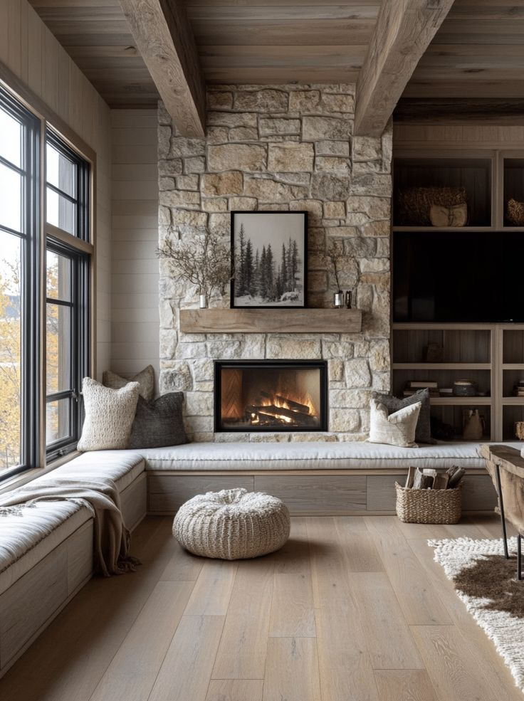

Yayınlanma: 25 Temmuz 2025
Şömine Taş Kaplama ile Evinize Doğallık Katın
Şömineler, evin içinde sıcaklık ve huzur hissi uyandıran odak noktalarıdır. Bu atmosferi daha da öne çıkarmak için doğal taş kaplama harika bir seçenektir. Rustik, modern ya da klasik fark etmeksizin her tarza uygun taş çözümleri mevcuttur.
Neden Taş Kaplama Şömineler için Uygundur?
Doğal taşlar, yüksek sıcağa dayanıklıdır ve bu yüzden şömine gibi alanlarda güvenle kullanılabilir. Ayrıca estetik görünümleriyle mekana doğallık ve karakter katarlar.
- Alev ve sıcağa karşı dayanıklıdır
- Doğal doku sayesinde dekoratif görünüm sağlar
- Farklı renk ve desenlerle kişiselleştirilebilir
Tarza Göre Taş Seçenekleri
Rustik bir stil için traverten ve kayrak taşı idealdir. Daha modern bir görünüm isteyenler için düz kesimli granit veya andezit tercih edilebilir. Klasik mekanlarda ise doğal mermer zarif bir seçenektir.
Uygulama Tüyoları
Şömine duvarının tamamını taşla kaplayabilir ya da sadece çerçeve bölgesine uygulayarak vurgu yaratabilirsiniz. Aydınlatmalarla taş dokusunu öne çıkarmak da etkili bir detaydır.